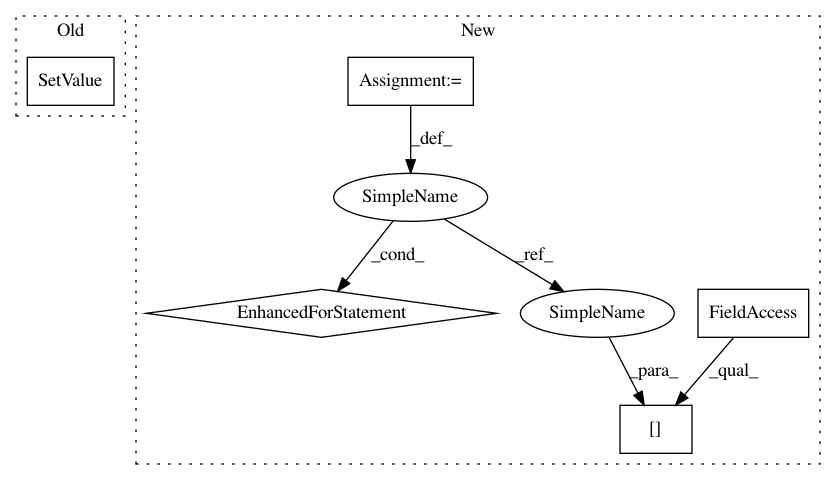

26e38513ca7be1a96b012f0853c832b2ec3b2e9f,mne/viz/_brain/_timeviewer.py,UpdateColorbarScale,__call__,#UpdateColorbarScale#Any#,186
Before Change
slider_rep.SetValue(fmax)
elif name == "fscale":
slider_rep = slider.GetRepresentation()
slider_rep.SetValue(1.0)
self.plotter.update()
class BumpColorbarPoints(object):
After Change
def __call__(self, value):
Update the colorbar sliders.
self.brain.update_fscale(value)
for key in self.keys:
if self.reps[key] is not None:
self.reps[key].SetValue(self.brain._data[key])
if self.fscale_slider_rep is not None:
self.fscale_slider_rep.SetValue(1.0)
self.plotter.update()
In pattern: SUPERPATTERN
Frequency: 3
Non-data size: 5
Instances
Project Name: mne-tools/mne-python
Commit Name: 26e38513ca7be1a96b012f0853c832b2ec3b2e9f
Time: 2020-04-20
Author: guillaume.favelier@gmail.com
File Name: mne/viz/_brain/_timeviewer.py
Class Name: UpdateColorbarScale
Method Name: __call__
Project Name: mne-tools/mne-python
Commit Name: 26e38513ca7be1a96b012f0853c832b2ec3b2e9f
Time: 2020-04-20
Author: guillaume.favelier@gmail.com
File Name: mne/viz/_brain/_timeviewer.py
Class Name: UpdateColorbarScale
Method Name: __call__
Project Name: mne-tools/mne-python
Commit Name: 26e38513ca7be1a96b012f0853c832b2ec3b2e9f
Time: 2020-04-20
Author: guillaume.favelier@gmail.com
File Name: mne/viz/_brain/_timeviewer.py
Class Name: _TimeViewer
Method Name: apply_auto_scaling
Project Name: mne-tools/mne-python
Commit Name: 26e38513ca7be1a96b012f0853c832b2ec3b2e9f
Time: 2020-04-20
Author: guillaume.favelier@gmail.com
File Name: mne/viz/_brain/_timeviewer.py
Class Name: _TimeViewer
Method Name: restore_user_scaling